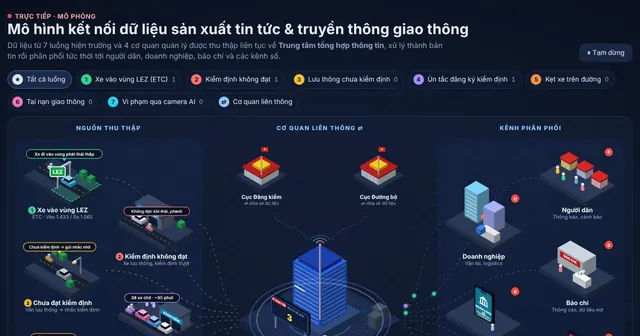

🕒 08:00
Sở XD
Cục CSGT
Cục Đăng kiểm
Trạm ETC
Camera AI
Chủ xe
Đánh giá thẳng giá trị của mô hình và cái giá nếu tiếp tục cách làm hiện tại.
Các dự án và hồ sơ khác của TORITECH trong hạng mục này.
 Kiến trúc dữ liệu đăng kiểm cho Đô thị thông minhMô hình tương tác
Kiến trúc dữ liệu đăng kiểm cho Đô thị thông minhMô hình tương tác
Kết nối dữ liệu sản xuất tin tức giao thôngMô phỏng 2.5D Giám sát bãi giữ xe học đườngMô phỏng 2.5D
Giám sát bãi giữ xe học đườngMô phỏng 2.5D